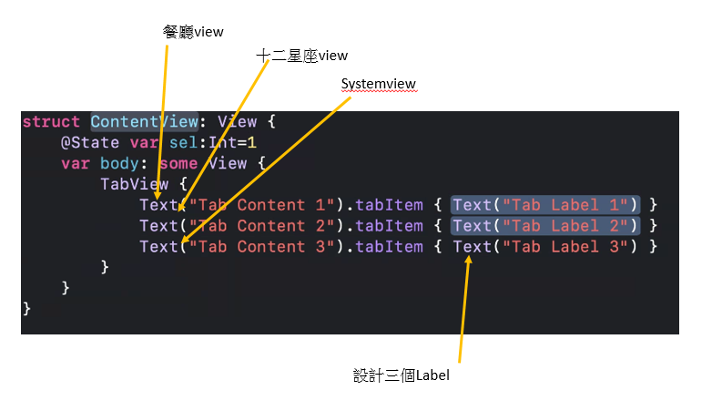
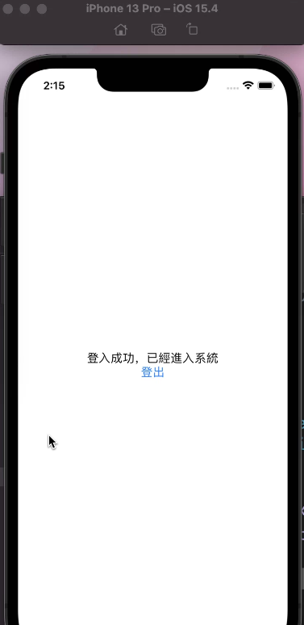

1. UITableViewDataSource 和UITableViewDelegate的再解釋
TableView需要兩樣東西資料和控制，也就是裡面放甚麼資料，刪除cell之類的控制動作，這兩項都需要程式碼
例如我需要拿資料塞到cell裡面，我就去呼叫《cell for row》這個程式，他就會塞好資料到你指定的cell裡面。
所以TableView會需要知道這些程式在哪邊，所以TableView必須指定到底是哪一個類別裡面是
我的
《UITableViewDataSource》
和
《UITableViewDelegate》。
然後我們就在該類別針對需要的部分，進行程式設計。
目前和
《UITableViewDataSource》
有關，而且也是加了協定後，該類別一定要有的方法是下面3個：
- 《number of section》，表格可以分成幾個section
- 《number of row》 要顯示幾個row
- 《cell for row》放進去每個cell的資料
接下來這個單元要介紹的是
- 點選事件的方法 例如點了臉書的其中一個動態消息，秀出該動態消息的完整訊息， 包括 《 willSelectRow》 方法 和 《 didSelectRow》 方法
- 《 UIAlertController 》 也就是對話框，例如彈出一個對話框，問你是否確定刪除。
- 閉包的寫法 這邊拿來用在對話框的回應處理，例如問你是否確定刪除，確定就閉包內刪除掉。
- 《 UITableViewCellAccessory 》 你應該看過cell最右邊有個>，表示這個cell可以點下去展開看更詳細的內容，這個就是輔助視圖(accessory view)
- 兩種滑動事件的方法 editingStyle方法和editActions方法
2. 點選事件-使用UIAlertController進行互動
cell的點選事件方法
tableView的cell的點選事件處理，有兩個方法- 《 willSelectRow》 方法 tableView(----,willSelectRowAt:.....) 在點選之前會執行這個方法，可以做為篩選之用，設條件阻止某些cell不被選取
- 《 didSelectRow》 方法 tableView(----,didSelectRowAt:.....)在點選之後會執行這個方法，
這個單元要利用上一個單元作好的表格，加上點選動作，再點選完後，秀出選單
記住一下目前資料來源有講過3個程式，加上目前的點選控制兩個willSelectRow和didSelectRow
已經五個了記清楚
override → 覆寫《 didSelectRow 》方法
我們一開始是不是建立了一個繼承UITableViewController的子類別，而且我們正在使用它?

UITableViewController本身就有tableView，所以當然tableView所有該有的DataSource和Deledate方法都是這個類別的成員方法，
我們正在用的既然是UITableViewController的子類別，當然有繼承到這些方法，
那麼我們希望在這些方法裡面加上程式碼，就必須
再寫一個同名的方法，裡面寫上我們客製化的程式碼，然後覆寫掉所繼承到的方法
覆寫的英文就是override，所以我們在func前面加上override
不要複製貼上，要善用選單， 輸入override func tableView就會有選單，找 《 didSelectRow》 方法，
override func tableViewDidEndMultipleSelectionInteraction(_ tableView: UITableView) {
應該可以看出來這個方法沒有傳回值。在didSelectRow中加入 alert 對話框
alert有兩種形式，如下
先認識兩個元件
你可以把他想成對話框的整個框架，所以光只有他，就是有的對話框，上面會有訊息，可是沒有任何按鈕可以點選，例如《確定》和《取消》
還記得我們要拉一個到類別時要選擇《Action》所以在類別中產生《IBAction》的方法當作按下按鈕之後的事件處理方法
這個AlertAction也是一種button，但是專門用在a;ert對話框之中
所以我們要建立並且顯示對話框需要基本的4個步驟
- 建立AlertController
- 建立AlertAction，然後在裡面加上按下按鈕後要執行的程式碼
- 把AlertAction塞進去AlertController
- 顯示AlertController
如果希望對話框上面有兩顆按鈕，那就是 1 4
三顆按鈕就是 1 4 ，以此類推。
下面是完整程式碼(不要複製貼上，不然就白上課了。)
解說如下
1 建立AlertController
let optionMenu = UIAlertController(title: nil, message: "What do you want to do?", preferredStyle: .actionSheet)
title: nil → 對話框沒有標題message: "你想執行什麼功能?" → 對話框上面的訊息是 你想執行什麼功能?
preferredStyle: .actionSheet → 對話框有兩種形式，如上圖所示。.actionSheet 是上圖右，出現在手機畫面最下方，.alert 是上圖左出現在手機畫面正中央
2 建立AlertAction，然後在裡面加上按下按鈕後要執行的程式碼
let cancelAction = UIAlertAction(title: "取消", style: .cancel, handler: nil)
title: "取消" → 這個按鈕上面顯示"取消"style: .cancel, → 按鈕形態是 《 .cancel 專門用在取消功能》， 常用的另一種形態是 《.default 一般按鈕使用》
handler: nil → handle是處理，handler是處理者，意思是按下按鈕之後要執行的程式碼放這邊，通常是以閉包形式撰寫，取消就甚麼都不做，所以給nil。
3 把AlertAction塞進去AlertController
optionMenu.addAction(cancelAction)
4 顯示AlertController
self.present(optionMenu, animated: true, completion: nil)
self.present → 這個tableViewController的類別，在app啟動後，就變成一個物件，想要存取成員變數或成員方法可以使用《self.》而present中文意思是展現optionMenu → 要展現的元件
animated: true → 要加上動畫效果
completion: nil → 對話框結束後，是一個事件，這邊也是可以加上閉包，把對話框結束後要執行的程式碼放進去。
執行畫面如下

取消點選
剛才點選了某一個Row，會一直保持被點選狀態，這樣或許會誤動作，最好記得取消點選。
tableView.deselectRow(at: indexPath, animated: true)
下面是目前完整的程式畫面

3. 點選事件-使用閉包來處理UIAlertAction
多加上一顆按鈕可以撥打電話給餐廳
因為之前已經1234了這邊要多加兩個alertAction，所以只需要23的步驟，也就是2.建立alertAction，3.把alertAction加到alert
這兩個alertAction的handler都會加入程式碼來做出相對應的動作。
我們要加的alertaction是 打電話給餐廳
2 建立AlertAction，然後在裡面加上按下按鈕後要執行的程式碼
let callAction = UIAlertAction(title: "致電餐廳", style: .default, handler: nil)
title: "致電餐廳" → 這個按鈕上面顯示"致電餐廳"style: .default, → 《 .cancel 專門用在取消功能》 《.default 一般按鈕使用》
handler: nil → 等等再加上閉包，先給nil。
3 把AlertAction塞進去AlertController
optionMenu.addAction(callAction)

使用閉包做事件處理
剛才做好的致電餐廳-callAction，並沒有加入handler， 所以不會有動作。但是模擬器也不能打電話，所以把實際打電話的程式碼改成出現另外一個alert,通知使用者不能打電話。
handler的部分要使用閉包來寫，有兩種寫的方式
- 閉包指定給一個變數 let x={閉包}
- 閉包直接放進去 let callAction = UIAlertAction(title: "致電餐廳", style: .default, handler:{閉包} )
let callAction = UIAlertAction(title: "致電餐廳", style: .default, handler: x )
這邊先使用第一種閉包的寫法，整個寫法如下
下面我們要寫一個閉包做出另一個alert(他的 preferredStyle: .alert是alert和前面那個actionsheet不同)
這個alert會顯示《這個設備無法打電話，請稍後再試》
下面是alert的完整程式碼(不要複製貼上，不然就白上課了。)
解說如下
0 閉包的宣告
(action:UIAlertAction!) -> Void in
(action:UIAlertAction!) → 傳入值預設是:UIAlertAction
Void → 無傳回值
1 建立AlertController
let alertMessage = UIAlertController(title: "設備無法使用", message: "這個設備無法打電話，請稍後再試", preferredStyle: .alert)
alertMessage → 對話框名稱
title: "設備無法使用" → 標題
message: "這個設備無法打電話，請稍後再試" → 警告訊息
preferredStyle: .alert → 對話框會出現在手機中央，.alertAction會出現在手機最下方
2 建立AlertAction
let OKAtcion=UIAlertAction(title: "OK", style: .default, handler: nil)
OKAtcion → 按鈕名稱
title: "OK" → 按鈕上顯示OK
style: .default → 按鈕形態是一般的樣式， .cancel是取消按鈕專用樣式
handler: nil → 不做任何動作只是告知使用者不能打電話
3 把AlertAction塞進去AlertController
alertMessage.addAction(OKAction
4 顯示AlertController
self.present(alertMessage, animated: true, completion: nil)
最後把閉包指定給一個變數callActionHandler
，再把callActionHandler指定給剛才callAction的handler,如下

4. 點選事件-使用UITableViewCellAccessory來標示cell
在這一段講義，是要利用cell Accessory輔助視圖，來讓使用者標註他去過的餐廳
做法是再增加一顆按鈕，點擊後會在點選的cell加上打勾符號的輔助視圖，如果已經去過的cell，再次點選可以取消打勾。
什麼是輔助視圖?
輔助視圖分成4種，如下圖，使用方式是設定其cell.accessoryType，例如使用打勾符號，就設定cell.accessoryType= .Checkmark
如果要把勾勾取消就cell.accessoryType= .none
- 打勾符號 check mark--> UITableViewCellAccessoryType.checkmark
- 細節揭示按鈕 detail disclosure button --> UITableViewCellAccessoryType.detailDisclosureButton
- 揭示指示符號disclosure indicator--> UITableViewCellAccessoryType.disclosureIndicator
- 細節圖示 detailButton--> UITableViewCellAccessoryType.detailButton

多加上一顆按鈕來標註使用者是否去過
按鈕上顯示"標註去過這家餐廳"，因為做過兩次了其他部分自己想辦法(假設名稱為 visitedAction )。

如何記錄使用者是否去過這家餐廳?
如果是真實的完成品應該視放在資料庫內，在開啟app時連其他資訊一起過來，所以應該是一個陣列而且長度要和《餐廳名稱》一樣
所以加入一個布林陣列的成員變數來表示是否已經去過，下面是swift宣告一個預設值為false，長度為21的陣列宣告方式，把他和其他陣列放在一起
var restaurantIsVisited = [Bool](repeating: false, count: 21)
如何讓cell的打勾或不打勾的狀態和restaurantIsVisited的true和false連結?
在《cell for row》方法中就是會根據索引值來設定cell內容
，所以在裡面就根據索引值取得restaurantIsVisited，
再根據true或false來設定《cell.accessoryType= .Checkmark》或《cell.accessoryType= .none》
使用閉包幫visitedAction製作handler，點選後將restaurantIsVisited[選取row的indexPath.row ]的布林值反相
這邊使用第二種閉包寫法，直接放進去
let visitedAction = UIAlertAction(title: "標註去過這家餐廳", style: .default, handler:{閉包} )
self.tableView.reloadData() 可以讓表格重新載入資料
可是這樣還是不夠好，因為visitedAction永遠顯示 "標註去過這家餐廳"，使用者會搞混，
所以最好當使用者沒去過，就顯示"標註去過這家餐廳"
如果已經去過則顯示"標註去過這家餐廳"
因此
let visitedAction = UIAlertAction(title: "標註去過這家餐廳", style: .default, handler:{閉包} )
的title: "標註去過這家餐廳"該怎麼寫呢?你一定會的，我就不寫出了。

5. 滑動事件-使用editingStyle方法幫tableview建立刪除功能
在這邊繼續介紹tableview其他的控制程式，上一個單元是點選，這個單元是滑動總共會介紹兩個程式 editingStyle和 editActions
先複習一下目前學到的
目前和資料來源有關的是
numberOfsections 有幾個sections固定給1
numberOfRows table有幾個row
cellForRow row裡面塞資料
和控制有關的
點選-didSelectRow
滑動 editingStyle和 editActions
上面的請回憶一下每個程式都在做甚麼的
editingStyle 這個不能自訂 只能刪除 但是使用方便
editActions 這個可以自訂功能 當然設定相對多一些
這一段講義將使用editingStyle來製作刪除餐廳的功能
editingStyle 方法
override func tableView(_ tableView: UITableView, commit editingStyle: UITableViewCellEditingStyle, forRowAt indexPath: IndexPath)
加入這個方法 在滑動時會出現delete按鈕

indexPath會提供哪一筆cell的數字
利用removeAtIndex方法來刪除陣列的那一筆資料
當然要同時刪除所有陣列的資料包括 restaurantNames, restaurantImages, restaurantLocations, restaurantTypes, restaurantIsVisited
完整程式碼如下
然後
重新載入UITableView
self.tableView.reloadData()
或者直接移除該行
self.tableView.deleteRows(at: [indexPath], with: .fade)
這兩種都可以
6. 滑動事件-使用editActions方法幫tableview建立自訂功能
editActions
editActions滑動產生更多自訂動作
這個動作會蓋掉剛剛的commit editingStyle(只能刪除或者修改)
editActionsForRowAt可以自己定義要做的動作
7. 習題
將前一章作業12星座作出下面修改
- 點選顯示12星座本週運勢，運勢可以自己編或網路抓成字串變數，然後索引值亂數產生
- editActions做出1 share的按鈕(如上) 2 第2顆按鈕是like按鈕，表示喜歡這個星座
- 修改下面Root View Controller 標題，並且在旁邊加上一顆按鈕clear清除所有的like